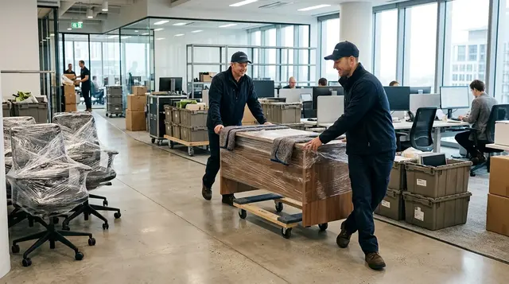
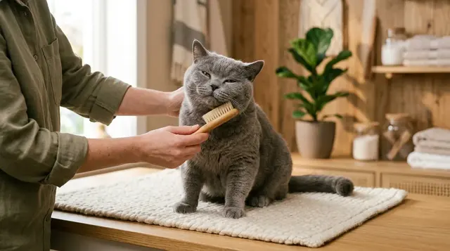
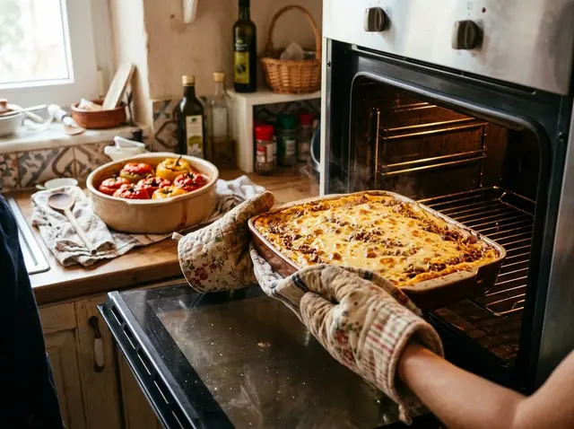

Ειδήσεις
Περισσότερα →
Νέο πλαίσιο για τα ενοίκια: τι αλλάζει από τον Ιανουάριο για ιδιοκτήτες και ενοικιαστές
Οι βασικές αλλαγές, οι προθεσμίες και ποιους αφορούν — εξηγημένα απλά, βήμα βήμα.

Πειραιάς: χειμερινή σεζόν κρουαζιέρας με περισσότερες αφίξεις από ποτέ

Φοιτητικές εστίες: ουρές για ένα δωμάτιο και ενοίκια που «τρέχουν»
Ήπιος καιρός το Σαββατοκύριακο, βροχές από τη Δευτέρα στα δυτικά
Η πρόγνωση ανά περιοχή και τι να περιμένουμε την επόμενη εβδομάδα.

Νέα χειμερινά δρομολόγια για Ύδρα, Πόρο και Αίγινα
Απόψεις
Περισσότερα →«Η ενημέρωση δεν είναι αγώνας ταχύτητας»
Η πρώτη είδηση δεν είναι πάντα η σωστή. Η σωστή είναι αυτή που αντέχει τον έλεγχο.
«Γιατί οι τοπικές ειδήσεις αξίζουν περισσότερη προσοχή»
Όσα συμβαίνουν στη γειτονιά μας αλλάζουν την καθημερινότητα πιο γρήγορα από τα μεγάλα θέματα.
«Η εμπιστοσύνη χτίζεται με μικρές διορθώσεις»
Ένα μέσο που παραδέχεται το λάθος του κερδίζει αναγνώστες που μένουν.
Αθλητισμός
Περισσότερα →Οικονομία
Περισσότερα →Κατασκευές: πού χτίζονται τα περισσότερα νέα διαμερίσματα
Οι περιοχές με τις περισσότερες άδειες και τι σημαίνει για τις τιμές.
Μεταφορές προς τα νησιά: γιατί ανεβαίνει το κόστος
Μεταφορείς και έμποροι εξηγούν τι πληρώνει τελικά ο καταναλωτής.

Τηλεργασία ή γραφείο; Τι προτιμούν τελικά οι εργαζόμενοι
Μια ματιά στις ελληνικές εταιρείες που άλλαξαν τρόπο δουλειάς.
Σούπερ μάρκετ: τι ακρίβυνε και τι φθήνυνε τον Νοέμβριο
Μια βόλτα στα ράφια με τη λίστα του μήνα στο χέρι.
Πολιτισμός
Περισσότερα →Οι παραστάσεις του χειμώνα που αξίζει να κλείσετε από τώρα
Από την αρχαία τραγωδία ως τη νέα ελληνική δραματουργία.

Δελφοί: εκδηλώσεις στο αρχαίο θέατρο τον Δεκέμβριο
Το πρόγραμμα, οι ώρες και πώς θα κλείσετε θέση.

Τα εργαστήρια που κρατούν ζωντανή την παράδοση
Τεχνίτες μιλούν για τη δουλειά των χεριών σε μια εποχή μηχανών.
Βραδιά στην Ακρόπολη: ειδικό ωράριο για το κοινό
Ποιες μέρες ισχύει και πώς γίνεται η είσοδος.
Lifestyle
Περισσότερα →
Κατοικίδια και κρύο: τι χρειάζεται η γάτα σας τον χειμώνα

Το παστίτσιο της Κυριακής: η συνταγή που περνά από γενιά σε γενιά

Ψηφιακές υπηρεσίες: πώς οι μεγαλύτεροι μαθαίνουν να τις χρησιμοποιούν